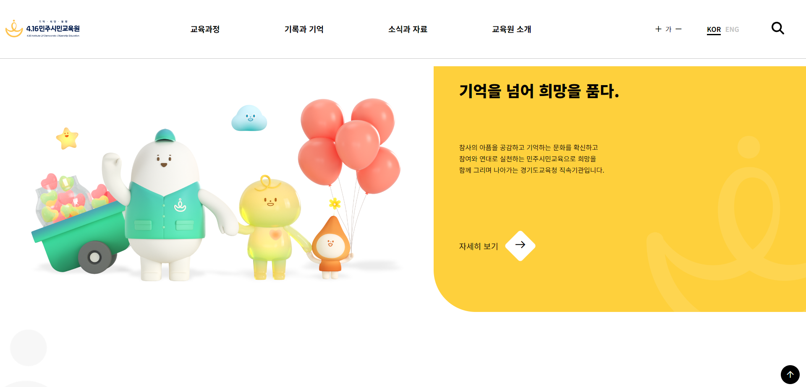

4.16민주시민교육원
Responsible Web

overview
귀엽고 심플한 4.16민주시민교육원 Web
#Responsible Web #js #css
프로젝트 목표:
미디어쿼리를 이용한 반응형 웹사이트
development review
미디어 쿼리를 이용한 유연한 콘텐츠 배치
웹페이지 레이아웃 제작
- flex 사용
동적 효과 구현(CSS, JavaScript)
- 타이핑효과
swiper, AOS 플러그인 사용
review
생각보다 굉장히 어려웠던 반응형웹
기기에 따라 달라지는 비율 조정이 힘들었습니다. 처음부터 다시 하는 등 막혔던 부분이 많아 교재와 유튜브 강의 등으로 찾아보며 완성했지만 아쉬운 부분이 많은 프로젝트였습니다.
아쉬운점
모바일로 맞춰서 gnb를 설정하니 pc에서 안 보임 width: auto; position: static;으로 초기화 시킴
아직 코드를 작성함에 있어 클래스나 아이디들에 따른 중복된 이벤트들에 대해 정리가 되지 않아 코드 정리가 필요